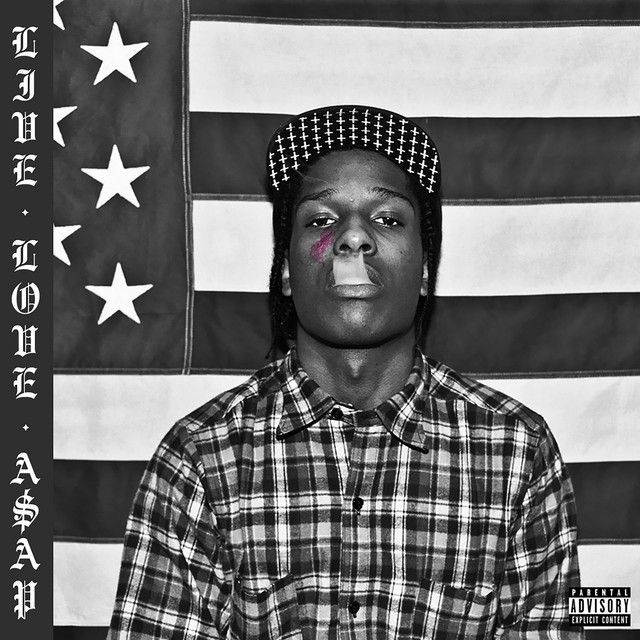

A$AP Rocky
A$AP Rocky, vlastným menom Rakim Athelaston Mayers, je americký rapper, producent, módny ikona a herec, ktorý sa preslávil svojím unikátnym štýlom, kreatívnym prístupom k hudbe a silným vplyvom na kultúru. Narodil sa 3. októbra 1988 v Harleme, New York City, a je členom vplyvnej hip-hopovej skupiny A$AP Mob, ktorá sa stala kľúčovým hráčom na rapovej scéne. Jeho kariéra odštartovala v roku 2011 vydaním mixtapeu Live.Love.A$AP, ktorý mu pomohol získat širokú pozornosť v hudobnom priemysle. Mixtape obsahoval hit „Peso“ a ukázal jeho schopnosť spájať rôzne hudobné štýly, od východného rapu po južanský trap. Tento projekt bol základom pre jeho debutový album Long. Live. A$AP (2013), ktorý sa stal komerčne úspešným a obsahoval hity ako „F**kin' Problems“ a „Wild for the Night“. A$AP Rocky je tiež známy svojim módnym vkusom, pričom sa stal jednou z najvýraznejších postáv v spojení medzi hip-hopom a high fashion. Spolupracoval s renomovanými značkami ako Dior, Gucci a Raf Simons, čím sa etabloval ako módny influencer, ktorý často experimentuje s avantgardným štýlom.
Späť na hlavnú stránku